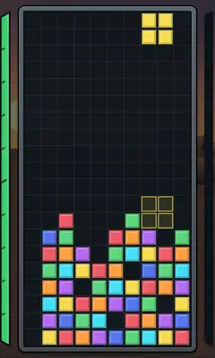

Break the Sun
Break the Sun is step 2 of Sun and Sand, given by  Katherine.
Katherine.
Objective
Break the Lesser Cult Leader's Sun Shield.
Their leader hides behind a Sun Shield. A spin or a double line breaks it. Break it three times.Katherine
Requirements
- Turn in Put Them Out first.
- It can be worked on before level 48, and is turned in at it.
Rewards
 Gold Coin ×2,000
Gold Coin ×2,000 Respec Shard
Respec Shard
3,855 experience.
Walkthrough
- Find Lesser Cult Leader:
- Research Station, in the Red Desert Story (fight 3 of the road)
- the Endless Dungeon's Research Station: a round boss; the warden its chest follows

Wait for Lesser Cult Leader's Sun Shield. His Sun Shield goes up, and every hit lands at a quarter while it stands. A spin or a clear of two lines breaks it, and that hit lands whole.- Do it 3 times in all: Break the Lesser Cult Leader's Sun Shield 3 times. Every answer counts, in any mode, over as many fights as it takes.
- Turn it in to Katherine on the QUESTS screen.
Tips
- While the Sun Shield stands, every hit lands at a quarter. A spin or a clear of two lines breaks it, and that hit lands whole.
- Save a T-spin or a double for when it goes up.
Changes
Not written yet
What changed in this quest, update by update.
| Sun and Sand | |
|---|---|
| Steps | Put Them Out · Break the Sun · No Flares |
| Next | No Flares |